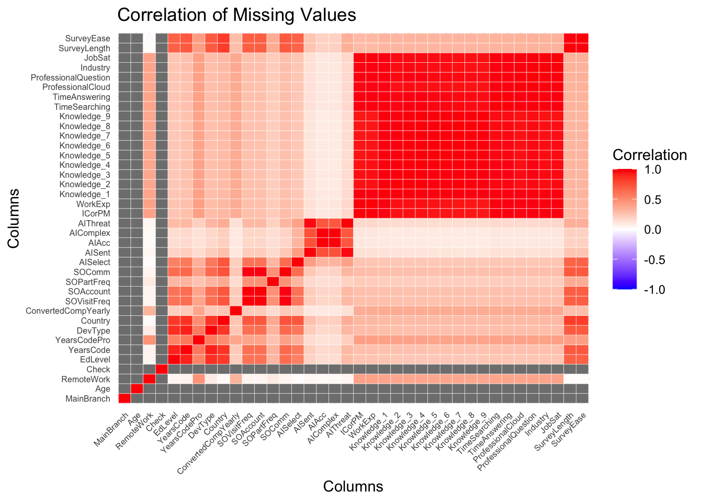
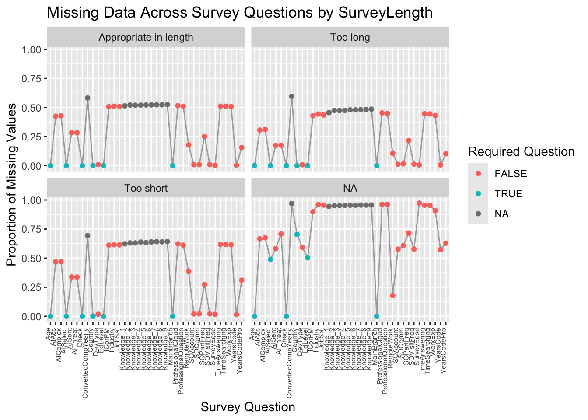

Every May since 2011, Stack Overflow conducts an annual survey. The 2024 survey included data about coding, working, AI and Stack Overflow users’ profiles and perceptions in these domains. The data is collected by Stack Overflow via a Qualtrics survey, and is updated on a yearly basis. The survey follows a questionnaire style with different types of questions including single-choice, multi-select, and Likert scale questions, ranking scale, boolean and text-based.
The May 2024 survey had over 65,000 respondents. Stack Overflow publishes results as a data table with 114 features (engineered from 87 questions) and 65,437 rows. It additionally publishes a schema and the questionnaire itself.
One concern in terms of parsing is with regards to multi-select questions. Parsing these either result in adding multiple columns which will have many missing values or parsing them in all possible combinations which has little interpretability. Hence, to begin, we limit the inputs to our analysis to the other question types. Additionally, we went through the schema and have picked questions whose responses are relevant to our research questions.
Finally, the data is downloaded into the ‘data’ folder and is imported using read.csv in R.
2.2 Missing value analysis
Code
library(tidyverse)
── Attaching core tidyverse packages ──────────────────────── tidyverse 2.0.0 ──
✔ dplyr 1.1.4 ✔ readr 2.1.5
✔ forcats 1.0.0 ✔ stringr 1.5.1
✔ ggplot2 3.5.1 ✔ tibble 3.2.1
✔ lubridate 1.9.3 ✔ tidyr 1.3.1
✔ purrr 1.0.2
── Conflicts ────────────────────────────────────────── tidyverse_conflicts() ──
✖ dplyr::filter() masks stats::filter()
✖ dplyr::lag() masks stats::lag()
ℹ Use the conflicted package (<http://conflicted.r-lib.org/>) to force all conflicts to become errors
We first look at the percentage of missing values in each of our selected columns. As is expected from an online questionnaire, there is a very high number of missing values with multiple columns crossing the 50% threshold as well. We observe that the ‘Check’ column, which was just a check to ensure that the participant was paying attention to the survey has zero missing values. Thus, we do not eliminate any rows based on this check. We also notice that the series of ‘Knowledge_’ questions, which all serve as part of a Likert-scale question have high missing values. These are probably a result of people skipping the question entirely.
To further check if there are any correlations between not answering certain types of questions, we plot a heatmap of correlations between missing values. We cannot compute correlations for Age, Check, and MainBranch since these questions have have no missing values.
Code
library(reshape2)
Attaching package: 'reshape2'
The following object is masked from 'package:tidyr':
smiths
Warning in cor(missing_matrix): the standard deviation is zero
Code
missing_corr_melted <-melt(missing_corr)ggplot(missing_corr_melted, aes(Var1, Var2, fill = value)) +geom_tile(color ="white") +scale_fill_gradient2(low ="blue", high ="red", mid ="white", midpoint =0,limit =c(-1, 1), space ="Lab", name ="Correlation" ) +theme_minimal() +theme(axis.text.x =element_text(angle =45, vjust =1, hjust =1, size=6),axis.text.y =element_text(size=6) ) +labs(title ="Correlation of Missing Values", x ="Columns", y ="Columns")

We observe that, typically, blocks of questions have missing values. For instance, it seems that missing values are correlated in the professional-related questions, i.e. from the column ICorPM until the industry question. These are perhaps a result of the individual being a student or just a hobby-developer. Similarly, another block of correlation is observed for the AI-related questions. Thus, it seems that perhaps, when skipping, individuals skipped certain lines of questioning entirely.
We believe that we can retain value by keeping these rows with missing values since perhaps the missing values form clusters of individuals. We explore one other cause of missing values - fatigue. To check this, we plot the percent missing values over the questions in order that they were answered, faceted on their answer to one of the last questions – “How do you feel about the length of the survey this year?”
Code
selected$SurveyLength <-fct_na_value_to_level(selected$SurveyLength)missing_values <- selected %>%group_by(SurveyLength) %>%summarise(across(everything(), ~mean(is.na(.)))) %>%pivot_longer(cols =-SurveyLength, names_to ="question", values_to ="missing_proportion")missing_values <- missing_values %>%left_join(schema, by =c("question"="qname"))ggplot(missing_values, aes(x = question, y = missing_proportion)) +geom_line(group =1, color ="darkgrey", size =0.5) +geom_point(aes(color = force_resp), size =1.5) +theme(axis.text.x =element_text(angle =90, hjust =1, vjust =-0.01, size =6)) +labs(x ="Survey Question", y ="Proportion of Missing Values",title ="Missing Data Across Survey Questions by SurveyLength",color ="Required Question") +facet_wrap(~ SurveyLength)
Warning: Using `size` aesthetic for lines was deprecated in ggplot2 3.4.0.
ℹ Please use `linewidth` instead.

We notice, as a general pattern, that the missing values have a somewhat upward trend as users progressed in the survey. As expected, the highest likelihood of missing values is when the last question is unanswered. Interestingly, those that thought the survey was “Too Short” had a higher proportion of missing values compared to those that thought it was “Too long”. Although somewhat counter intuitive, perhaps it is the fatigue from actually answering the questions that results in answering “Too long”, while not answering leads to believing it was too short.
We additionally look at data on whether the question is a required question. We notice that certain non-required questions also have very few missing values, indicating user keenness on answering these questions, such as their current development type (i.e. job) and questions regarding their experience with Stack Overflow. We also notice how even certain required questions have high missing values, which perhaps indicates a systemic flaw. We are considering dropping the rows where a required question was not answered, since this likely indicates an incomplete survey that was wrongly submitted.
2.3 Preprocessing
Certain variables in the dataset appeared as semi-colon separated lists which were parsed in python via preprocess.ipynb. Typically, this was to get the counts in a wide format.